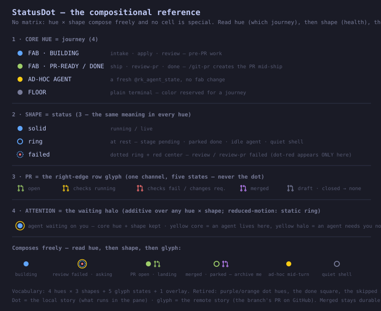
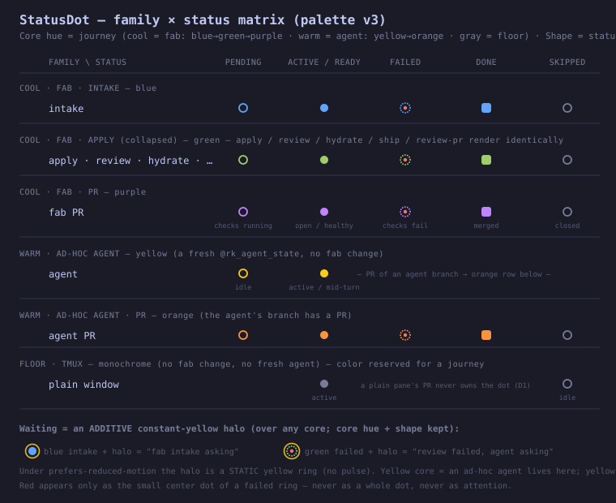

Today a closed-unmerged PR renders no glyph — indistinguishable from "no PR ever existed"
(the prOwnsGlyph allowlist admits only open · merged). Proposal: admit closed using GitHub's
exact vocabulary — red + the distinct git-pull-request-closed icon
(an ✕ replaces the merge arc). Shape, not color, disambiguates the two reds, exactly as GitHub does:
red normal icon = failing open PR · red ✕ icon = closed. Icons in this section use the lucide
stroke idiom that actually ships in sidebar/icons.tsx (the octicon fills further down are the older mock approximation).
DECIDED (2026-08-10): user chose the muted ✕ variant —
closed = text-text-secondary + the closed icon; the ✕ shape alone separates closed from draft. Red rejected (dead PRs shouldn't draw rest-state attention).
| window state | TODAY (shipped)5 glyph states · closed → no glyph at all | PROPOSED — closed = red ✕GitHub-exact (REJECTED by user review) · 6 states · red normal icon stays "failing" | VARIANT — closed = muted ✕DECIDED 2026-08-10 — anti-clutter: shape says closed, gray says "dead, ignore" |
|---|
text-text-secondary, same as draft) says "dead — ignore".
Quieter sidebar at rest.prOwnsGlyph allowlist grows to open · merged · closed — it stays a positive allowlist, so an absent/unknown prState still renders no glyph.
· In prGlyphColor the closed branch sits above the fail branch: stale checks on a dead PR are noise (mirrors merged-above-fail in prDotState).
· A closed draft reads closed (GitHub semantics; the gray draft branch is open-gated, so this falls out by construction — see row 01).
· Both glyph surfaces pick the icon by state: window-row.tsx and session-tiles.tsx.
· The status dot is untouched — the local/remote split (dot = local story, glyph = remote story) is preserved.
Same 18 window states under four configurations. The right-edge git-pull-request glyph is the rest-state PR indicator that already shipped (93dy) — the question is what the dot still owes once the glyph carries the PR story. Waiting rows pulse (static ring under reduced motion).
| window state | CURRENT6 hues · 5 shapes · PR owns the dot per family | A — PR evicted, square retired4 hues · 3 shapes · glyph-only PR channel (+ yellow pending glyph) · blue = building (intake→review), green = PR-ready · done falls to floor | B — square-only removal6 hues · 4 shapes · PR keeps the dot; merged→solid, done→solid | C — PR evicted, square kept4 hues · 4 shapes · blue = building, green = PR-ready · square survives for parked-done fab only |
|---|
The A-vocabulary is fully compositional (shape means the same thing in every hue), so the 6×5 matrix
retires in favor of four legend strips + composed examples. Decisions locked: PR evicted to the glyph
(incl. the NEW yellow checks-running glyph state) · square + skipped retired · blue = building,
green = PR-ready/done · halo unchanged.
NOTE (260810-xuej): the glyph strip's "closed → none" entry
is superseded by the closed-PR proposal at the top of this page — closed earns a muted ✕ glyph
(text-text-secondary; the red variant was rejected at mock review).

Left: the shipped palette-v3 matrix. Right: the intermediate matrix-form draft of configuration A (superseded by the compositional reference above).
